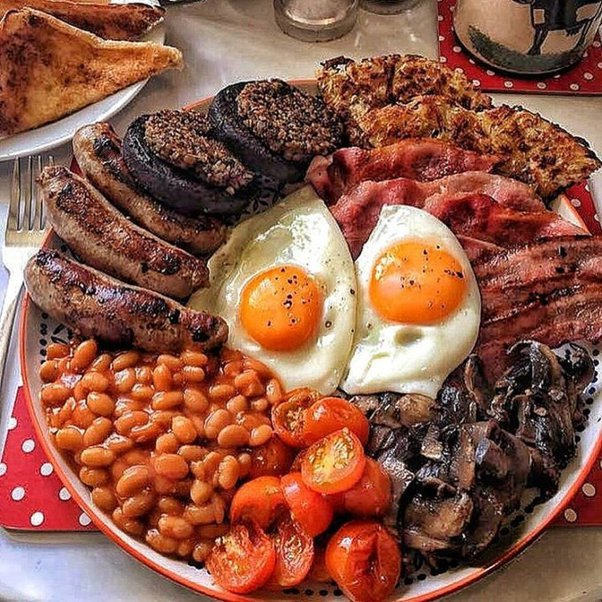

Japan

Click to experience AR experience
Monarchy & Heritage
The UK is a constitutional monarchy, with a rich history of royalty and tradition. The British royal family plays a major role in the country's identity and cultural heritage.
Festivals & Traditions
Major celebrations include Christmas, the Queen's Birthday, and Guy Fawkes Night. These events are celebrated with parades, fireworks, and gatherings.
Cuisine
British cuisine includes iconic dishes like fish and chips, roast dinners, and a variety of teas. Regional specialties also reflect the UK's diverse culture.
Media & Entertainment
The UK is known for its contributions to literature, music, and television. British authors, musicians, and actors have had a significant influence on global culture.
← Back to Home